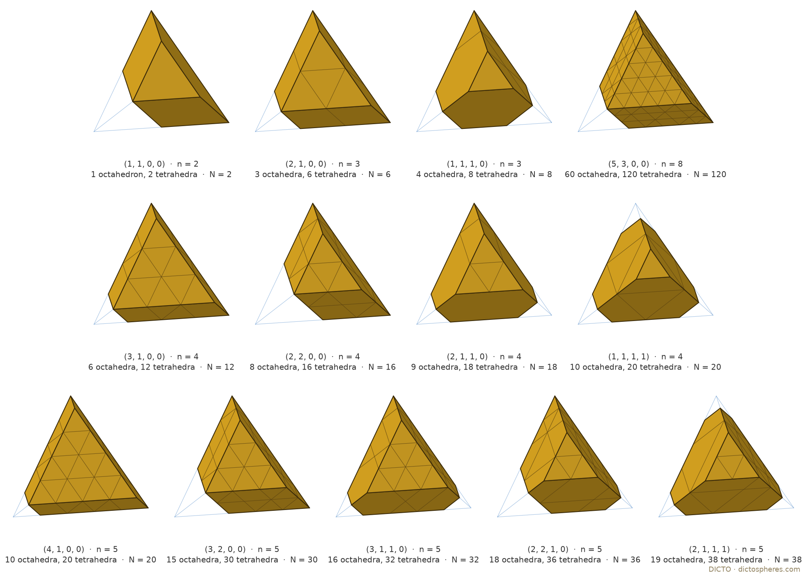
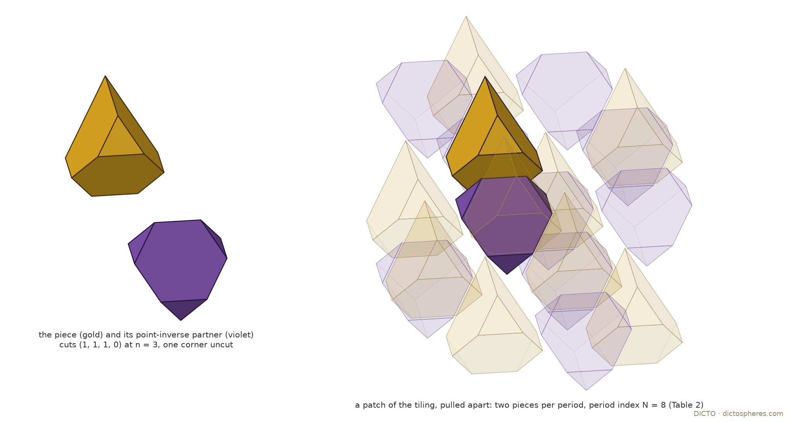

Some solids fill space on their own, like bricks; most do not. In 1901 Max Dehn found a ledger that every lone space-filler must balance: each edge enters with its length, written against its angle, and angles that are whole fractions of a half-turn count as nothing. Run along a family of solids, the ledger balances only at a few members. On the families studied here, those few are exactly the members that fill space, once a second, local count of angles round an edge is added. And among tetrahedra with their four corners cut off, the ledger balances exactly when the four cuts add up to one edge: every such piece we could test fills space, two to a period.
For a polyhedron P with edges e of length Le and interior dihedral angle θe, the Dehn invariant is D(P) = Σe Le ⊗ θe in ℝ ⊗ℚ (ℝ/ℚπ) (Dehn 1901). It is additive when solids are glued, and it is zero for every polyhedron that tiles space by congruent copies (Debrunner 1980); by Sydler (1965) D(P) = 0 is also exactly the condition for P to be cut into finitely many pieces that reassemble into a cube. Two facts are used throughout. If θ is not a rational multiple of π, then L ⊗ θ = 0 only for L = 0; and a ⊗ θ + b ⊗ θ′ = 0 with a, b linearly independent over ℚ forces θ ≡ θ′ ≡ 0 modulo ℚπ.
The angles met here are β = arccos(1/√3) ≈ 54.74° and its relatives α = arccos(1/3) = π − 2β ≈ 70.53°, the tetrahedron's dihedral. Neither is a rational multiple of π: if θ = rπ with r rational, 2 cos θ is an algebraic integer, but 2 cos α = 2/3 and 2 cos 2β = −2/3 are not (Conway, Radin and Sadun 1999 classify all such angles).
The test is one-sided: D(P) = 0 does not make P a tiler. The second test is local. Round a generic point of an edge of a tile, the tiles that meet there fill a full turn, so the dihedral angles of the edges through that point, plus π for every tile in whose face the point lies, add up to 2π; on the boundary of a half-space they add up to π. If no sum of the solid's own dihedral angles and multiples of π reaches 2π at some edge, the solid cannot tile alone. We call this the angle count.
The sweep of #90 and #94 is S(μ) = C ∩ μC*, with C = [−1, 1]³ the cube and C* = {|x| + |y| + |z| ≤ 1} its polar octahedron, from the octahedron (μ = 1) through Kelvin's truncated octahedron (μ = 3/2) and the cuboctahedron (μ = 2) to the cube (μ = 3) (#90, DICTO DOI: 10.5281/zenodo.23931136; #94, DICTO DOI: 10.5281/zenodo.23934349).
Proof. For 1 ≤ μ ≤ 2 the faces are six squares x = ±1, ±y, ±z (side (μ − 1)√2) and eight hexagons in the planes ±x ± y ± z = μ. A hexagon–hexagon edge, e.g. from (1, μ − 1, 0) to (μ − 1, 1, 0), has length √2 (2 − μ), and there are 12; its dihedral is π − α = 2β. A square–hexagon edge has length √2 (μ − 1), there are 24, and its dihedral is π − β. So D = 12√2 (2 − μ) ⊗ 2β − 24√2 (μ − 1) ⊗ β = 24√2 (3 − 2μ) ⊗ β. For 2 ≤ μ ≤ 3 the faces are six octagons on x = ±1, … and eight triangles with corners (1, 1, μ − 2) and its permutations, side √2 (3 − μ); octagon–octagon edges have dihedral π/2 and count as nothing, the 24 triangle–octagon edges have dihedral π − β, so D = −24√2 (3 − μ) ⊗ β. The two formulas agree at the cuboctahedron, and at μ = 1 the first gives the octahedron's own 12√2 ⊗ 2β. Since β ∉ ℚπ, D = 0 only where the coefficient vanishes. Kelvin's cell and the cube both tile space. ∎
The second dual sweep of #94 is CO ∩ μRD, with CO = {|xi| ≤ 1, |x| + |y| + |z| ≤ 2} the cuboctahedron and RD = {|xi| + |xj| ≤ 1} its polar rhombic dodecahedron, from the RD (μ = 1) to the CO (μ = 2).
Proof. (a) For μ ≤ 4/3 the RD's three-fold corners (μ/2, μ/2, μ/2) satisfy |x| + |y| + |z| ≤ 2, so no CO plane is active; the faces lie in the RD planes and, for μ > 1, in the cube planes x = ±1. The dihedral angles are 2π/3 (RD plane against RD plane) and 3π/4 (RD plane against cube plane), both rational multiples of π, so D = 0. For μ > 4/3 triangles appear in the planes ±x ± y ± z = 2. Their dihedral is π/2 + β against an RD plane and π − β against a cube plane, so D = (Ltr − Lts) ⊗ β, where Ltr, Lts are the total lengths of the triangle–RD and triangle–cube edges. For 4/3 ≤ μ ≤ 3/2 a triangle has corners (2 − μ, 2μ − 2, 2 − μ) and its permutations, side √2 (3μ − 4), all against RD planes: Ltr = 24√2 (3μ − 4), Lts = 0. For 3/2 ≤ μ ≤ 2 the cube planes cut each triangle into a hexagon with corners such as (1, μ − 1, 2 − μ): three sides √2 (2 − μ) against RD planes and three sides √2 (2μ − 3) against cube planes, so Ltr − Lts = 24√2 [(2 − μ) − (2μ − 3)] = 24√2 (5 − 3μ). At μ = 2 this is −24√2, the cuboctahedron's value in Theorem 1.1, as it must be. (b) Scale by 3: the planes become |xi| ≤ 3, |xi| + |xj| ≤ 5, |x| + |y| + |z| ≤ 6, whose corners are the signed permutations of (1, 2, 3). (c) For 1 < μ ≤ 4/3 the dihedrals are 2π/3 and 3π/4 only. At a generic point of a 3π/4 edge, 3π/4·x + 2π/3·y + π·w = 2π or π with x ≥ 1; multiplying by 12/π gives 9x + 8y + 12w ∈ {24, 12}, so x is even, x = 2, and 8y + 12w = 6 or −6, neither possible. For the B3 permutohedron the dihedrals are 3π/4 (rectangle–octagon), π/2 + β (rectangle–hexagon) and π − β (octagon–hexagon). At a generic point of a rectangle–octagon edge, x(3π/4) + y(π/2 + β) + z(π − β) + wπ ∈ {2π, π} with x ≥ 1; the β-parts force y = z, and then 3x + 6y + 4w ∈ {8, 4}, which again forces x even, x = 2, and 6y + 4w = 2 or −2: no solution. The RD tiles space. ∎
The B3 permutohedron is the orbit of (3, 2, 1), the half-sum of positive roots of the group C3 (Sp(6)), so it is a weight shape in the sense of The Golden Ladder, Chapter 2 (DICTO DOI: 10.5281/zenodo.23966554). It has the same face directions and the same three dihedral angles as the Archimedean truncated cuboctahedron, with a different ratio of edges. Its hexagons are not centrally symmetric, so it is not a parallelohedron. Turned on its three-fold axis, it stays Dehn-zero and still fails the angle count; that halves-and-turns reading belongs to HexOct: The Hexagonality Law, Chapter 16 (DICTO DOI: 10.5281/zenodo.23731359), and is not repeated here.
The tetrahedron's own dual sweep is T ∩ μ(−T), from the tetrahedron (μ = 3) through the Archimedean truncated tetrahedron (μ = 5/3) to the octahedron (μ = 1), with the mirror half μ ↦ 1/μ (#94, part E). For 1 ≤ μ ≤ 3 each corner is cut at t = (3 − μ)/4 of the edge.
Proof. The 6 hexagon–hexagon edges have length (1 − 2t)a and dihedral α; the 12 hexagon–triangle edges have length ta and dihedral π − α. So D = 6(1 − 2t)a ⊗ α − 12ta ⊗ α. The study checks the formula from the hull: coefficient 0 at μ = 2, −5.657 at μ = 5/3 (= −6a(1/3) at the study's edge a = 2√2). The tiling is Theorem 2.4 below, case (1, 1, 1, 1). ∎
Known. The tiling by this truncated tetrahedron is known: Damasceno, Engel and Glotzer (2012) found it as the β-tin structure among the dense packings of a family of truncated tetrahedra, and Gabbrielli, Jiao and Torquato (2012, Figure 15) describe it by "chopping the four corners" at edge 1/4, each piece containing 20 tetrahedra and 10 octahedra of the octet. New here: that on all three sweeps the Dehn test alone picks out exactly the members that tile (with the angle count for the stretch and the B3 permutohedron of the CO–RD sweep); and the exact Dehn lines of Theorems 1.1 and 1.2.
Remark (the sweep's other measures). On the same tetrahedron sweep the roundness V²/A³ is largest exactly at the octahedron, and the Mahler volume is 4(μ³ − 9μ² + 27μ − 11)/(3μ) for 1 ≤ μ ≤ 3, largest at μ* = (11 − √33)/4 ≈ 1.3139, where it is ≈ 11.3723 (study 2026-11-04-tetra-sweep, part 1). These are not space-filling results; their home is the roundness and Mahler thread of #94's next version.
Let T be a regular tetrahedron of edge a and c = (c1, c2, c3, c4) cut fractions, ci ≥ 0 and ci + cj ≤ 1 (cuts may meet on an edge but not overlap). Pc is T with the corner tetrahedron of edge cia removed at corner i.
Proof. The edge between corners i and j keeps length (1 − ci − cj)a and dihedral α. The cut triangle at corner i has three edges of length cia, each against a face through corner i, with dihedral π − α (the cut is parallel to the face opposite corner i). So D = a[Σi<j(1 − ci − cj) − 3Σci] ⊗ α = a(6 − 6Σci) ⊗ α, and α ∉ ℚπ. ∎
The sweep of Section 4 is the uniform case ci = t, which gives Proposition 1.3. The study states the family in a second form, which shows that it has one free parameter of position and none of shape.
Proof. Write T = {x : −vi·x ≤ 1}, with v1, …, v4 the corner directions, Σvi = 0 and |vi|² = 3, so that corner i is vi and vi·x runs from −1 on the opposite face to 3 at corner i. The cut at corner i is the plane vi·x ≤ μi with ci = (3 − μi)/4. The four cut planes bound {vi·x ≤ μi} = w + m(−T), where m = Σμi/4 and w solves vi·w = μi − m (solvable, because the four equations add up to 0 = 0 and any three vi are independent). And Σci = (12 − Σμi)/4 = 1 exactly when Σμi = 8, that is m = 2. ∎

When a and the cuts are whole numbers, T(n) (edge n) is a union of the octet's cells of edge 1, and so is Pk = T(n) with corner tetrahedra T(ki) removed, Σki ≤ n, ki + kj ≤ n. The octet has exactly two tetrahedra for every octahedron, so a tiling by copies of an octet polyform that lies along the octet's cells needs that ratio in the piece.
Proof. T(m) consists of C(m + 2, 3) upward and C(m, 3) downward tetrahedra and C(m + 1, 3) octahedra, so its excess (tetrahedra minus twice the octahedra) is the second difference C(m + 2, 3) − 2C(m + 1, 3) + C(m, 3) = m. Excess is additive, so Pk has excess n − Σki. With ci = ki/n, Proposition 2.1 finishes. ∎
For the uniform cut (1, 1, 1, 1) the study noted this at n = 4: T(4) minus its corners is 20 tetrahedra and 10 octahedra, the counts of Gabbrielli, Jiao and Torquato. Proposition 2.3 is the same remark for every cut: the global test (Dehn) and the counting test (density) coincide on the whole family.
The Dehn-zero integer pieces with n ≤ 5 are the twelve partitions of n into two to four parts: (1, 1) at n = 2; (2, 1), (1, 1, 1) at n = 3; (3, 1), (2, 2), (2, 1, 1), (1, 1, 1, 1) at n = 4; (4, 1), (3, 2), (3, 1, 1), (2, 2, 1), (2, 1, 1, 1) at n = 5 (zeros omitted).
Proof (computation). For each piece, every orientation in the octet's symmetry group, and every period lattice of index N in the face-centred cubic lattice of the octet's corners (all Hermite normal forms, each fcc point carrying one octahedron and two tetrahedra), the exact cover problem "each cell of the torus in exactly one copy" is solved by the SAT solver CaDiCaL, starting at N = number of octahedra in the piece (one piece per period) and then at twice that. Every case has no solution at one piece per period and a solution at two (Table 2.1). The cells are exact, so a solution is a tiling, not an approximation. The method was calibrated on the two pieces tiled earlier by the exact-cover search, (1, 1, 1, 1) at N = 20 and (1, 1, 0, 0) at N = 2. As a second, geometric check, the (1, 1, 1, 1) tiling at N = 20 was built with real polytopes: 2 × 20 = 40 = the period's volume, no overlap among 18 489 nearby pairs, and every one of 15 512 random points within radius 5.9 in exactly one copy; the pieces (2, 1, 0, 0)/3 and (1, 1, 1, 0)/3 passed the same check in their mirror-pair form (0 overlaps, 4000 of 4000 points covered once), and a deliberately wrong offset failed it (213 overlaps). ∎
| n | cuts k | octahedra | tetrahedra | N (two pieces) | period (HNF) |
|---|---|---|---|---|---|
| 2 | (1, 1, 0, 0) | 1 | 2 | 2 | diag(1, 1, 2) |
| 3 | (2, 1, 0, 0) | 3 | 6 | 6 | diag(1, 2, 3) |
| 3 | (1, 1, 1, 0) | 4 | 8 | 8 | diag(2, 2, 2) |
| 4 | (3, 1, 0, 0) | 6 | 12 | 12 | diag(1, 3, 4) |
| 4 | (2, 2, 0, 0) | 8 | 16 | 16 | diag(2, 2, 4) |
| 4 | (2, 1, 1, 0) | 9 | 18 | 18 | diag(2, 3, 3) |
| 4 | (1, 1, 1, 1) | 10 | 20 | 20 | [[10, 1, 4], [0, 2, 1], [0, 0, 1]] |
| 5 | (4, 1, 0, 0) | 10 | 20 | 20 | diag(1, 4, 5) |
| 5 | (3, 2, 0, 0) | 15 | 30 | 30 | diag(2, 3, 5) |
| 5 | (3, 1, 1, 0) | 16 | 32 | 32 | diag(2, 4, 4) |
| 5 | (2, 2, 1, 0) | 18 | 36 | 36 | diag(3, 3, 4) |
| 5 | (2, 1, 1, 1) | 19 | 38 | 38 | [[19, 3, 9], [0, 1, 0], [0, 0, 2]] |
| 8 | (5, 3, 0, 0) | 60 | 120 | 120 | diag(3, 5, 8) |
Table 2.1. The thirteen tilings. N is the index of the period lattice in the fcc lattice; N equals twice the number of octahedra, so each period holds two pieces. The patches of radius 7.2 to 12 close for every n ≤ 5 piece as well (SAT patch test). Data: studies/2026-11-04-tetra-sweep, census-sat.log, satper-1.log, satper-2.log (dicto-big-brother, ~/study-runs/2026-11-04-tetra-sweep/data), census-n4.log, tiling-N20.json, verify-real.log.


For irrational cuts it stays open, and the first construction tried does not settle it. The study tried one uniform mirror-pair rule, P together with its mirror image σzP shifted by w on the lattice B·diag(1 − c1, 1 − c2, 1 − c3), which works for the integer cuts at their own offsets. For the golden cut (φ−1, φ−2, 0, 0) at w = 0 it fails (436 overlapping pairs of 41 412; 388 of 4000 points uncovered). The scan over other offsets has no recorded result. So the conjecture is stated for rational cuts only. A proof would need one construction that works continuously in the translation w of Proposition 2.2; the solver's periods (Table 2.1) do not yet show one.
The next pieces to try are those with golden cuts. This section gives only the finished part of that study, the exact list.
Proof (exact computation). Every combination with repetition of four values from the list is summed and compared in ℤ[φ], written a + bφ with φ² = φ + 1, so no floating point is used; the condition ci + cj ≤ 1 is decided exactly by comparing b√5 with an integer. Each sum can be checked by hand from φ−k + φ−k−1 = φ−k+1. ∎
| # | cuts | Fibonacci approximants n: k | approximants that tile (Table 2.1) |
|---|---|---|---|
| 1 | 0, 0, φ−1, φ−2 | 3: (0, 0, 2, 1) · 5: (0, 0, 3, 2) · 8: (0, 0, 5, 3) · 13: (0, 0, 8, 5) | n = 3, 5, 8 |
| 2 | 0, φ−1, φ−3, φ−4 | 3: (0, 2, 1, 0) · 5: (0, 3, 1, 1) · 8: (0, 5, 2, 1) · 13: (0, 8, 3, 2) | n = 3, 5 |
| 3 | 0, φ−2, φ−2, φ−3 | 3: (0, 1, 1, 1) · 5: (0, 2, 2, 1) · 8: (0, 3, 3, 2) · 13: (0, 5, 5, 3) | n = 3, 5 |
| 4 | φ−1, φ−3, φ−5, φ−6 | 8: (5, 2, 1, 0) · 13: (8, 3, 1, 1) · 21: (13, 5, 2, 1) · 34: (21, 8, 3, 2) | none tested (first at n = 8) |
| 5 | φ−1, φ−4, φ−4, φ−5 | 5: (3, 1, 1, 0) · 8: (5, 1, 1, 1) · 13: (8, 2, 2, 1) · 21: (13, 3, 3, 2) | n = 5 |
| 6 | φ−2, φ−2, φ−4, φ−5 | 5: (2, 2, 1, 0) · 8: (3, 3, 1, 1) · 13: (5, 5, 2, 1) · 21: (8, 8, 3, 2) | n = 5 |
| 7 | φ−2, φ−3, φ−3, φ−4 | 3: (1, 1, 1, 0) · 5: (2, 1, 1, 1) · 8: (3, 2, 2, 1) · 13: (5, 3, 3, 2) | n = 3, 5 |
Table 2.2. The seven golden Dehn-zero truncated tetrahedra, with Fibonacci approximants (φ−j ≈ Fm−j/Fm, chosen so that the k add up exactly to n = Fm). Piece 1 has 11 corners, because its two cuts meet on an edge (φ−1 + φ−2 = 1); the others have 12. Data: studies/2026-11-04-tetra-sweep/data/golden-cuts.json, scripts/golden_cuts.py.
Six of the seven have small approximants that tile, and piece 1 has three in a row. That is evidence, not a result: whether a golden piece itself tiles is not decided. The earlier patch searches on these approximants timed out (census-golden.log) before the SAT method replaced them, and the one construction tried on the real golden cut fails (Section 7). None of the seven is harmonically silent: in #94's fingerprint each has Q3, Q4, Q6, Q8 all nonzero (golden-harmonic.json), so the harmonic test gives no further clue.
Known, credited: the Dehn invariant (Dehn 1901), Debrunner's theorem (1980), Sydler's theorem (1965); the tilings by Kelvin's cell, the cube and the RD; the octet (Lagarias and Zong 2012); the uniform member T(4) minus its corners and its β-tin tiling (Damasceno, Engel and Glotzer 2012; Gabbrielli, Jiao and Torquato 2012, Fig. 15, with its counts 20 and 10). DICTO's earlier work, cited: the sweeps (#90, #94); the weight shapes (The Golden Ladder, Chapter 2). New here: Theorems 1.1 and 1.2 with their exact Dehn lines; the identification of the CO–RD sweep's lone Dehn-zero solid as the B3 permutohedron and the proof that it cannot tile alone; that the cube-trimmed RDs are Dehn-zero but cannot tile alone; that on all three sweeps the Dehn test, with the angle count, picks out exactly the members that tile; Propositions 2.1 to 2.3 (the Dehn-zero family by its cut sum, by one translation of 2(−T), and by the octet ratio); the twelve tilings of Theorem 2.4 beyond the uniform one, and the thirteenth at n = 8; Conjecture 2.5; the list of seven golden pieces. In the sources checked, only the uniform cut 1/4 appears.
Sources checked: the studies' own tables (standard dihedral tables of the Platonic and Catalan solids, 2026-11-04-rt-pyramids); the reference library entries Damasceno, Engel and Glotzer, ACS Nano 6 (2012) 609, and Gabbrielli, Jiao and Torquato, Phys. Rev. E 86 (2012) 041141, both read for the β-tin tiling (2026-11-04-tetra-sweep, part 2); Conway, Radin and Sadun (1999), in the library, for the irrationality of the angles. No search was made for earlier statements of Theorems 1.1 and 1.2 beyond these, and no wider search yet for non-uniform truncated tetrahedra that tile (status box).
All in the research branch; heavy runs on dicto-big-brother (~/study-runs/2026-11-04-tetra-sweep, ~/geom/bin/python). Sweeps: studies/2026-11-04-rt-pyramids (README, section "Space-filling (Dehn) test on the sweeps' own solids"); studies/2026-11-04-tetra-sweep (scripts/measures.py, data/measures.json); the Concordance grid, row "CO–RD sweep", column "Dehn", corrected 4 November 2026 from "zero only at μ = 5/3" to the stretch 1 ≤ μ ≤ 4/3 as well. Dehn screen (used to find the statements, not to prove them; every Dehn statement here is proved exactly): studies/2026-11-04-dehn-screen, scripts/dehn.py, calibrated 11 of 11 at tolerance 10−8. Truncated tetrahedra: studies/2026-11-04-tetra-sweep, README parts 1, 2 and "Reformulation"; scripts census.py, sat_periodic.py (exact cover with CaDiCaL through PySAT; calibrated on the 60° rhombohedron, which tiles at index 1, a lone tetrahedron, which never tiles, and the two earlier tilings), verify_tiling.py, verify_real.py, golden_cuts.py, golden_harmonic.py; data census-sat.log, satper-1.log, satper-2.log, census-n4.log, tiling-N20.json, verify-real.log, golden-cuts.json, golden-harmonic.json. A first enumeration of the period lattices used wrong off-diagonal ranges (right count, wrong lattices) and missed N = 20; it was fixed before any result here. Concordance ledger, entries "Census", "SAT periodic test", "Periodic test", "CONJECTURE", "Uniform mirror-pair construction on REAL golden cuts". Figures: scripts/figlib.py (a small orthographic renderer) with fig_sweeps.py, fig_cutter.py, fig_table.py, fig_tiling.py in studies/2026-11-04-tetra-sweep/scripts. Each re-checks what it draws: fig_sweeps.py recomputes the Dehn coefficient of all 18 drawn solids from their hulls and matches the formulas of Theorems 1.1, 1.2 and Proposition 1.3; fig_cutter.py checks Σci = 1 and the volume for each cutter position; fig_table.py recounts the octahedra and tetrahedra of all thirteen pieces against Table 2.1 and the piece volumes; fig_tiling.py rebuilds the (1, 1, 1, 0)/3 tiling and finds all of 6000 random points in exactly one copy.